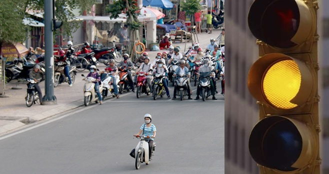
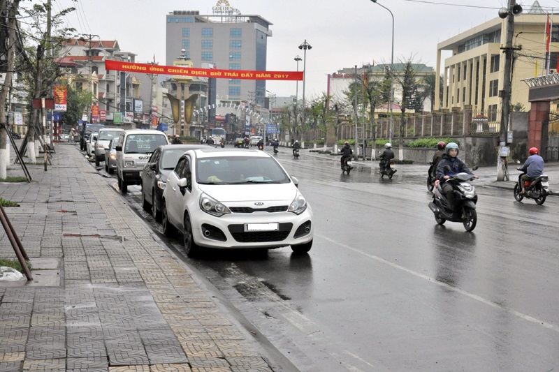
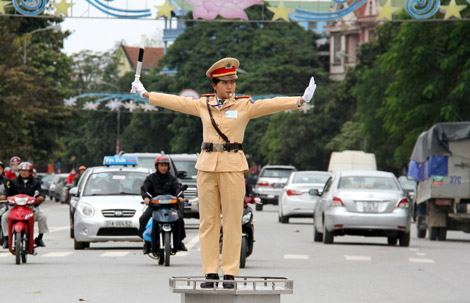
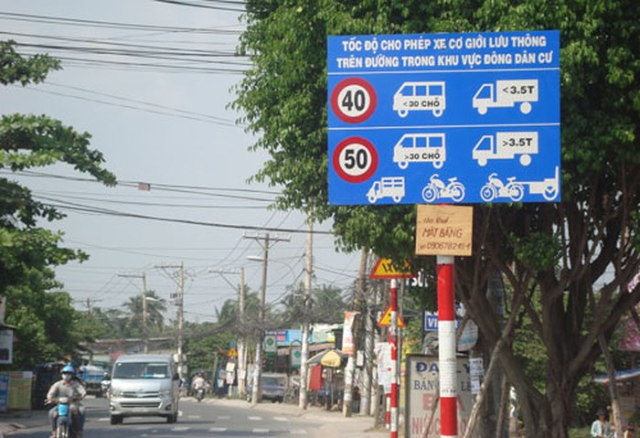
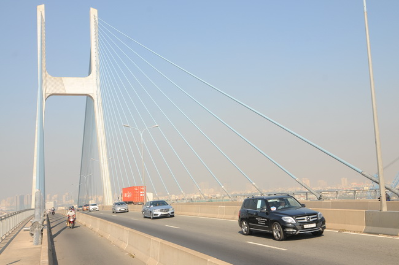

Tư vấn Luật: 12 quy định của Luật Giao thông đường bộ ai cũng cần biết
Luật Giao thông đường bộ mới nhất đã được ban hành cách đây khá lâu, tuy nhiên cho đến nay, không phải ai khi tham gia giao thông cũng nắm rõ được hết các quy định. Điều này dẫn đến việc không ít người sẽ vô tình mắc phải những hành vi vi phạmLuật giao thông đường bộ.
Để đảm bảo an toàn và không bị xử phạt khi tham gia giao thông, dưới đây là 12 quy định cơ bản nhất của Luật Giao thông đường bộ mà bạn nên nắm rõ:
1. Quy định về đèn vàng
Tại khoản 3 Điều 10, đèn giao thông được quy định bao gồm: Đèn xanh, Đèn đỏ và Đèn vàng. Trong đó, đèn xanh là được đi; đèn đỏ là cấm đi.
Đèn vàng là phải dừng lại trước vạch dừng, trừ trường hợp đã đi quá vạch dừng thì được đi tiếp; trong trường hợp tín hiệu vàng nhấp nháy là được đi nhưng phải giảm tốc độ, chú ý quan sát, nhường đường cho người đi bộ qua.
2. Vượt xe phải báo hiệu bằng đèn hoặc còi
Điều 14 quy định, xe xin vượt phải có báo hiệu bằng đèn hoặc còi; trong đô thị và khu đông dân cư từ 22 giờ đến 5 giờ chỉ được báo hiệu xin vượt bằng đèn.
Khi vượt, các xe phải vượt về bên trái, trừ khi xe phía trước có tín hiệu rẽ trái hoặc đang rẽ trái; khi xe điện đang chạy giữa đường; khi xe chuyên dùng đang làm việc trên đường mà không thể vượt bên trái được.
7 nơi không được lùi xe
Điều 16 quy định, không được lùi xe tại các địa điểm sau:
- Ở khu vực cấm dừng
- Trên phần đường dành cho người đi bộ qua đường
- Nơi đường bộ giao nhau
- Nơi đường bộ giao với đường sắt
- Nơi tầm nhìn bị che khuất
- Trong hầm đường bộ
- Đường cao tốc
4. Dừng, đỗ xe không cách lề đường phố quá 0,25m
Nguyên tắc dừng, đỗ xe trên đường phố được quy định tại Điều 19 Luật Giao thông đường bộ như sau: Phải cho xe dừng, đỗ sát theo lề đường, hè phố phía bên phải theo chiều đi của mình; bánh xe gần nhất không được cách lề đường, hè phố quá 0,25m; trường hợp đường phố hẹp, phải dừng xe, đỗ xe ở vị trí cách xe ô tô đang đỗ bên kia đường tối thiểu 20m.
Không được dừng xe, đỗ xe trên đường xe điện, trên miệng cống thoát nước, miệng hầm của đường điện thoại, điện cao thế, chỗ dành riêng cho xe chữa cháy lấy nước.
5. Xe chữa cháy được đi trước tiên
Theo Điều 22, trong số các xe ưu tiên thì xe chữa cháy đi làm nhiệm vụ được ưu tiên đi trước các xe khác; sau đó là lần lượt là xe quân sự, xe công an đi làm nhiệm vụ khẩn cấp; Xe cứu thương đang thực hiện nhiệm vụ cấp cứu; Xe hộ đê, xe làm nhiệm vụ khắc phục sự cố thiên tai; Đoàn xe tang.
Khi có tín hiệu của xe được quyền ưu tiên, người tham gia giao thông phải nhanh chóng giảm tốc độ, tránh hoặc dừng lại sát lề đường bên phải để nhường đường.
6. Chỉ được “kẹp 3” trên xe máy trong 3 trường hợp
Người điều khiển xe máy chỉ được chở một người, trong 03 trường hợp sau thì được chở 02 người: Chở người bệnh đi cấp cứu; Áp giải người có hành vi vi phạm pháp luật; Chở trẻ em dưới 14 tuổi.
Khi ngồi trên xe máy không được sử dụng ô; mang, vác vật cồng kênh; đứng trên yên xe… - theo Điều 30.
7. Người đủ 16 tuổi được đi xe máy
Điều 60 quy định về độ tuổi của người điều khiển xe máy, ô tô như sau:
- Người đủ 16 tuổi trở lên được lái xe máy dung tích xi-lanh dưới 50 cm3
- Người đủ 18 tuổi trở lên được lái xe máy dung tích xi-lanh từ 50 cm3 trở lên; xe ô tô tải có trọng tải dưới 3.500 kg; xe ô tô chở người đến 9 chỗ ngồi
- Người đủ 24 tuổi trở lên được lái xe ô tô chở người từ 10 đến 30 chỗ ngồi
- Người đủ 27 tuổi trở lên được lái xe ô tô chở người trên 30 chỗ ngồi
- Tuổi tối đa của người lái ô tô trên 30 chỗ ngồi là 50 tuổi đối với nữ và 55 tuổi đối với nam.
8. Nhận diện hiệu lệnh của người điều khiển giao thông
Theo khoản 2 Điều 10 Luật giao thông, hiệu lệnh của người điều kiện giao thông bao gồm:
- Tay giơ thẳng đứng: Báo hiệu cho người tham giao thông ở các hướng dừng lại;
- Hai tay hoặc một tay dang ngang: Báo hiệu cho người tham gia giao thông ở phía trước và ở phía sau người điều khiển giao thông phải dừng lại; người tham gia giao thông ở phía bên phải và bên trái của người điều khiển giao thông được đi.
- Tay phải giơ về phía trước: Báo hiệu cho người tham gia giao thông ở phía sau và bên phải người điều khiển giao thông phải dừng lại; người tham gia giao thông ở phía trước người điều khiển giao thông được rẻ phải; người tham gia giao thông ở phía bên trái người điều khiển giao thông được đi tất cả các hướng; người đi bộ phải đi sau lưng người điều khiển giao thông.
9. Nhận diện biển báo hiệu đường bộ
Nếu như tín hiệu đèn giao thông có 3 màu thì biển báo hiệu đường bộ có 05 nhó, gồm:
- Biển báo cấm để biểu thị các điều cấm;
- Biển báo nguy hiểm để cánh báo các tình huống nguy hiểm có thể xảy ra;
- Biển hiệu lệnh để báo các hiệu lệnh phải thi hành;
- Biển chỉ dẫn để chỉ dần hướng đi hoặc các điều cần biết;
- Biển phụ để thuyết minh bổ sung các loại biển báo cấm, biển báo nguy hiểm, biển hiệu lệnh và biển chỉ dẫn.
10. Tốc độ cho phép của các loại xe
Theo khoản 1 Điều 12 Luật Giao thông đường bộ, người lái xe phải tuân thủ quy định về tốc độ xe chạy trên đường. Điều 6, Điều 7, Thông tư 91/2015/TT-BGTVT hướng dẫn cụ thể về quy định này như sau:
- Trong khu vực đông dân cư: tốc độ tối đa cho phép của các phương tiện (trừ xe máy chuyên dùng, xe gắn máy) là 60km/h nếu là đường đôi; 50km/h nếu là đường hai chiều không có dải phân cách; đường một chiều có một làn.
- Ngoài khu vực đông dân cư: tốc độ tối đa cho phép của các phương tiện là 90km/h nếu là ô tô con, ô tô đến 30 chỗ; 80km/h nếu là ô tô trên 30 chỗ nếu là đường đôi; nếu là đường hai chiều không có dải phân cách giữa, đường một chiều có 1 làn xe cơ giới, tốc độ tương ứng của các loại xe là 80km/h và 70km/h…
11. Khoảng cách an toàn giữa các xe
Bên cạnh đảm bảo tốc độ cho phép, Luật Giao thông yêu cầu người lái xe phải giữ một khoảng cách an toàn đối với xe chạy liền trước xe của mình. Thông tư 91/2015/TT-BGTVT hướng dẫn về điều này như sau:
- Khi mặt đường khô ráo, nếu tốc độ chạy xe dưới 60km/h thì khoảng cách tối thiểu là 35m; nếu 80km/h thì khoảng cách là 55m, nếu 100km/h thì là 70m, 120km/h là 100m.
- Khi trời mưa, có sương mù, mặt đường trơn trượt, đường quanh co, đèo dốc…, người lái xe phải điều chỉnh khoảng cách theo biển báo trên đường.
12. Cấm người đi bộ đi vào đường cao tốc
Điều 26 Luật giao thông đường bộ 2008 cấm người đi bộ, xe thô sơ, xe gắn máy, xe mô tô và máy kéo; xe máy chuyên dùng có tốc độ thiết kế nhỏ hơn 70km/h đi vào đường cao tốc, trừ người, phương tiện, thiết bị phục vụ việc quản lý, bảo trì đường cao tốc.
Với các phương tiện khác, khi đi vào đường cao tốc, người lái xe phải có tín hiệu xin vào và phải nhường đường cho xe đang chạy trên đường, khi thấy an toàn mới cho xe nhập vào dòng xe…
-----------------------------------------------------------------------------
Bạn có thể xem chi tiết Luật giao thông đường bộ năm 2019 tại đây: